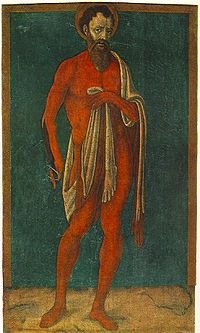

| Апостол Варфоломей Материал из Википедии — свободной энциклопедии |
|  «Святой Варфоломей с содранной кожей» (Маттео ди Джованни, 1480) |
Варфоломе́й (Нафанаи́л) (ивр. תולמי-בר, греч. Βαρθολομαίος, лат. Bartholomaeus) —
один из двенадцати апостолов (учеников) Иисуса Христа, упомянут в Новом Завете.
Новозаветная историяУпомянут в списках апостолов в Евангелии от Матфея (10:3), от Марка (3:18), от Луки (6:14), а также в Деяниях Апостолов (1:13). Имя «Варфоломей» возможно является арамейским патрономическим именем (отчеством) «bar talamai» — «сын Фалмая»,[1], где Фалмай — искажённое на арамейский лад греческое имя Птолемей.Существует практически единодушное мнение библеистов о том, что упомянутый в Евангелии от Иоанна (1:45-50) Нафанаил — это одно лицо с Варфоломеем. Следовательно, апостол Варфоломей — один из первых учеников Христа, призванный четвёртым вслед за Андреем, Петром и Филиппом. Евангелист сообщает, что Варфоломей был родом из Каны Галилейской (Ин.21:2). По видимому, он был родственником или близким другом апостола Филиппа, поскольку именно Филипп привёл Варфоломея к Иисусу, и в списках апостолов они упоминаются рядом. В сцене призвания Нафанаила-Варфоломея он произносит знаменитую фразу «Из Назарета может ли быть что доброе?». Иисус, увидев его, говорит о нём «Вот подлинно Израильтянин, в котором нет лукавства». Более определённых сведений Священное Писание о Варфоломее не сообщает, большая часть его жизнеописания известна по апокрифическим источникам. |
ПреданияСогласно преданию Варфоломей вместе с Филиппом проповедовал в городах Малой Азии, особенно в связи с именем апостола Варфоломея упоминают город Иераполь. Традиция сообщает также о его поездке в Индию и проповеди в Армении, где на Арташатском холме он встретился с апостолом Иудой Фаддеем, так что армянская церковь почитает его как своего покровителя. Евсевий Кесарийский сообщает, что в Индии Варфоломей оставил основанной им общине Евангелие от Матфея на еврейском языке, которое было найдено философом Пантеном, преподавателем Александрийской школы. |
СмертьСогласно преданию, апостол Варфоломей был казнён в городе Великой Армении Альбане (Албанополь, Урбанополь), который православная традиция отождествляет с Баку[2][3] в котором при раскопках у Девичьей башни были обнаружены остатки древнего храма, отождествляемого с базиликой, возведённой над местом гибели апостола.[1] По другой версии под Альбаной понимается понтийский город Никополь.[1]Апостола распяли вниз головой, но он продолжал свою проповедь, тогда его сняли с креста, сняли кожу, а затем обезглавили.[4] Около 410 года мощи Варфоломея были перенесены из Альбаны в Мартирополь, а около 507 года в город Дара (Месопотамия). При нашествии персов в 574 году, по сообщению Григория Турского, раку с мощами бросили в море и он чудесным образом приплыл к острову Липари. Около 838 года мощи перенесли в Беневенто, где они хранятся в настоящее время. С Х века часть мощей апостола хранится на острове Тиберина (Рим) в церкви Сан-Бартоломео, посвящённой апостолу. Память апостола Варфоломея совершается:* в Католической церкви — 24 августа, * в Православной церкви (по юлианскому календарю) — 22 апреля, 11 июня (смерть), 30 июня (собор Двенадцати апостолов), 25 августа (перенесение мощей[5]), * в Армянской церкви почитается как её основатель, к которому возводится апостольская преемственность её иерархии, дни памяти — 25 февраля и 8 декабря. |